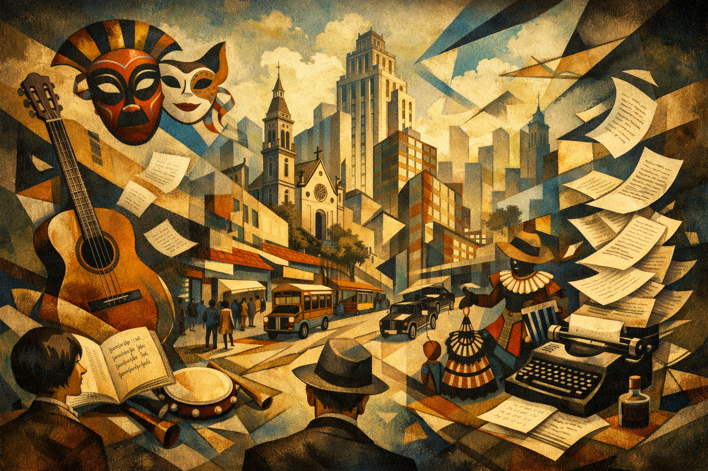

Modernismo no Brasil
O Modernismo no Brasil foi um movimento artístico e literário iniciado oficialmente em 1922, com a realização da Semana de Arte Moderna, em São Paulo. Mais do que uma simples renovação estética, o Modernismo representou uma profunda ruptura cultural com os modelos tradicionais herdados do século XIX e a consolidação de uma nova forma de pensar a arte, a linguagem e a identidade nacional.
Os modernistas rejeitaram o academicismo, o formalismo rígido e a imitação excessiva da cultura europeia, propondo uma arte livre, experimental e autenticamente brasileira. O movimento dialoga diretamente com o Pré-Modernismo, que já havia iniciado o questionamento social e cultural do país, mas avança ao propor uma verdadeira revolução estética.
Contexto Histórico e Cultural
O Modernismo surge em um período de intensas transformações no Brasil e no mundo. A crise da República Velha, o enfraquecimento das oligarquias rurais e o crescimento da industrialização e da urbanização alteraram profundamente a estrutura social brasileira. Novos grupos sociais, especialmente a classe média urbana, passaram a exigir maior participação cultural e política.
No cenário internacional, o impacto da Primeira Guerra Mundial e o surgimento das vanguardas artísticas europeias — como o Futurismo, o Cubismo, o Expressionismo e o Dadaísmo — estimularam uma visão crítica sobre os valores tradicionais da civilização ocidental. Os artistas brasileiros absorveram essas influências, mas buscaram reinterpretá-las a partir da realidade nacional.
A Semana de Arte Moderna de 1922
A Semana de Arte Moderna, realizada no Theatro Municipal de São Paulo, marcou simbolicamente o início do Modernismo no Brasil. O evento reuniu escritores, artistas plásticos e músicos que defendiam a renovação estética e o rompimento com os padrões acadêmicos.
Apesar da forte resistência do público conservador e das críticas da imprensa da época, a Semana teve papel fundamental ao colocar em debate a necessidade de uma arte moderna, experimental e conectada à identidade brasileira. Seu impacto foi mais ideológico do que imediato, mas suas ideias influenciaram profundamente a produção cultural das décadas seguintes.
Características do Modernismo
O Modernismo caracteriza-se pela diversidade de propostas e pela liberdade criadora. Entre suas principais características, destacam-se:
- Ruptura com o academicismo: rejeição das normas rígidas de forma e estilo.
- Linguagem coloquial: aproximação da oralidade e da fala cotidiana.
- Experimentalismo: liberdade formal, fragmentação e inovação estética.
- Nacionalismo crítico: valorização da cultura brasileira sem idealizações.
- Ironia e humor: uso do riso como forma de crítica social e cultural.
Principais Autores do Modernismo
Os autores modernistas não formam um grupo homogêneo, mas compartilham o desejo de transformar a literatura brasileira em um espaço de liberdade, reflexão e experimentação. Suas trajetórias pessoais e intelectuais ajudam a compreender a amplitude e a complexidade do movimento.
Mário de Andrade
Mário de Andrade (1893–1945) foi escritor, crítico, musicólogo e um dos principais articuladores do Modernismo brasileiro. Intelectual profundamente comprometido com a cultura nacional, dedicou-se ao estudo do folclore, da música popular e das manifestações culturais brasileiras.
Sua atuação vai além da produção literária: Mário foi um pensador da cultura, defendendo a valorização das raízes populares e a construção de uma identidade brasileira plural. Sua postura crítica e inovadora ajudou a consolidar os princípios modernistas e influenciou gerações posteriores de escritores.
Oswald de Andrade
Oswald de Andrade (1890–1954) foi um dos autores mais irreverentes e provocadores do Modernismo. De origem abastada, utilizou sua posição privilegiada para questionar ironicamente os valores da elite cultural e o colonialismo intelectual.
Oswald destacou-se pela defesa de uma arte brasileira autônoma, crítica e humorística. Sua postura iconoclasta e seu espírito de vanguarda foram fundamentais para romper definitivamente com o academicismo e estimular uma visão antropofágica da cultura, baseada na assimilação criativa das influências estrangeiras.
Manuel Bandeira
Manuel Bandeira (1886–1968) representa uma vertente mais lírica e intimista do Modernismo. Marcado por uma vida atravessada pela doença, desenvolveu uma poesia sensível, simples e profundamente humana.
Bandeira aproximou a poesia do cotidiano, valorizando temas simples, memórias pessoais e emoções discretas. Sua obra contribuiu para tornar a linguagem poética mais acessível e afetiva, ampliando o alcance do Modernismo junto ao público leitor.
Carlos Drummond de Andrade
Carlos Drummond de Andrade (1902–1987) é considerado um dos maiores poetas da literatura brasileira. Sua trajetória acompanha a maturação do Modernismo, passando do experimentalismo inicial para uma poesia reflexiva, crítica e existencial.
Drummond abordou questões sociais, políticas e filosóficas, sempre com ironia e sensibilidade. Sua obra reflete o conflito do indivíduo moderno diante das transformações do mundo, tornando-se um retrato profundo da experiência humana no século XX.
Ampliação do Contexto Histórico do Modernismo
O Modernismo desenvolveu-se paralelamente às grandes mudanças políticas do país, como a Revolução de 1930 e o fim da República Velha. O Estado Novo, a industrialização acelerada e a urbanização intensificaram as tensões sociais e culturais, ampliando o campo de reflexão dos escritores.
A literatura modernista acompanha esse processo, refletindo as contradições da modernidade brasileira: progresso e exclusão, tradição e inovação, identidade nacional e influência estrangeira. O escritor passa a assumir um papel ativo na interpretação do país e na crítica das estruturas sociais.
Fundamentação Crítica e Teórica
Segundo o crítico literário Alfredo Bosi, o Modernismo representa o momento em que a literatura brasileira alcança plena autonomia estética, rompendo com modelos importados e assumindo uma postura crítica diante da realidade nacional.
Para Antonio Candido, o Modernismo consolida a maturidade do sistema literário brasileiro, ao integrar forma, conteúdo e função social, permitindo que a literatura dialogue de maneira mais profunda com a sociedade e a cultura do país.
Modernismo x Movimentos Anteriores
O Modernismo distingue-se claramente dos movimentos que o antecederam:
- Parnasianismo: culto excessivo à forma e afastamento da realidade social.
- Simbolismo: subjetividade e espiritualização da linguagem.
- Modernismo: liberdade estética, crítica cultural e identidade nacional.
Importância e Legado
O Modernismo foi decisivo para a renovação da literatura brasileira. Ao romper com padrões rígidos e valorizar a diversidade cultural do país, o movimento ampliou os horizontes temáticos e formais da arte literária.
Seu legado permanece vivo na produção contemporânea, influenciando a linguagem, os temas e a postura crítica dos escritores brasileiros.
Conclusão
O Modernismo no Brasil representa uma das mais importantes transformações culturais da história nacional. Ao redefinir o papel da arte e do escritor, o movimento contribuiu para a construção de uma literatura livre, plural e profundamente ligada à realidade brasileira.
“O Modernismo é a afirmação de uma consciência crítica e criadora, que liberta a literatura brasileira dos modelos impostos e a coloca em diálogo com sua própria realidade.” — Alfredo Bosi, História Concisa da Literatura Brasileira
Explore Outros Conteúdos
Continue seus estudos acessando outras seções do site Mestre Kira: